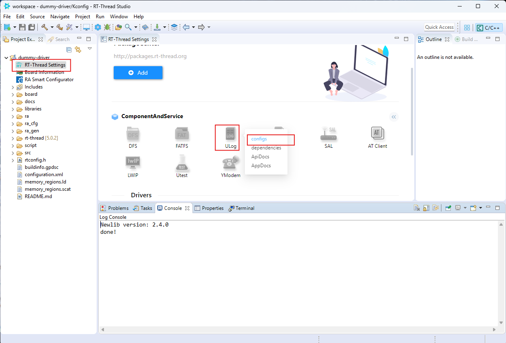
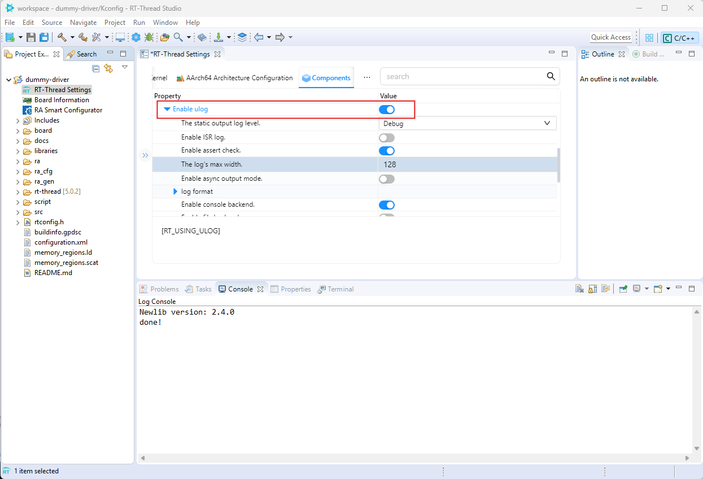
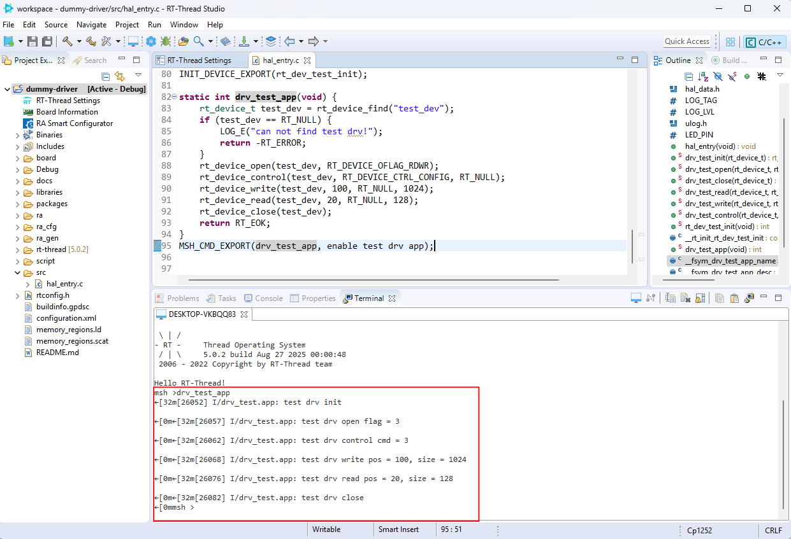

Dummy Device Driver¶
Intermediate 40 นาที
วัตถุประสงค์¶
- เข้าใจ RT-Thread Device Framework — ระบบปฏิบัติการมอง hardware อย่างไร
- สร้าง Driver ที่มี Operations: init, open, read, write, control, close
- ลงทะเบียน Device เข้ากับ RT-Thread kernel
- เรียกใช้ Driver ผ่าน Application API และ MSH Shell
ทำไมต้อง Dummy Driver?¶
Workshop 1-2 คุณใช้ rt_pin_write() ควบคุม LED โดยตรง — นั่นคือการเขียนค่าถึง GPIO register
แต่ในระบบปฏิบัติการจริง ไม่ควรให้ application ยุ่งกับ hardware โดยตรง แต่ควรผ่าน ** abstraction layer** คือ Device Driver
| Layer | หน้าที่ | ตัวอย่าง |
|---|---|---|
| Application | เรียกใช้งานผ่าน API มาตรฐาน | rt_device_read(), rt_device_write() |
| Device Driver | แปลง API เป็นการควบคุม hardware จริง | GPIO driver, UART driver, WiFi driver |
| Hardware | Register/Peripheral จริง | LED Pin, UART Port, WiFi Module |
Dummy Driver = driver ที่ไม่ต้องต่อ hardware จริง แต่มี structure ครบถ้วน เพื่อให้เข้าใจ framework ก่อนไปใช้ driver จริง (WiFi RW007, OpenMV, etc.)
ขั้นตอนที่ 1: สร้าง Project และเปิด Ulog¶
- สร้าง Project ใหม่ชื่อ
dummy-driver - เปิด RT-Thread Settings

- ในส่วน Component → Service เลือก Ulog → กด Configs

Ulog คืออะไร?
Ulog เป็นระบบ log ของ RT-Thread แทนที่ rt_kprintf() ธรรมดา รองรับ level (DBG/INFO/WARN/ERROR) และ tag เพื่อกรอง log ได้ง่าย
ขั้นตอนที่ 2: เขียน Dummy Driver¶
Copy Code ต่อไปนี้ใส่ใน src/hal_entry.c แทนที่ Code เดิม
- หัวใจของ RT-Thread OS
- Device framework header — มี
rt_device_t,rt_device_create(),rt_device_register() - Ulog: ระบบ log แบบมี tag และ level
hal_entry()ยังคงกะพริบ LED เป็น background taskLOG_I()= Info level log จะแสดงใน console พร้อม[I/drv_test.app]tag
สร้างและลงทะเบียน Device¶
- สร้าง device ประเภท Character device (เหมือนไฟล์ /dev/ ใน Linux)
- ผูก (bind) function ที่จะถูกเรียกเมื่อ application ใช้งาน
INIT_DEVICE_EXPORT()= บอก RT-Thread ให้เรียก auto-init ตอน boot
Application ทดสอบ Driver¶
- Find: ค้นหา device จากชื่อที่ลงทะเบียน — ได้ pointer มาใช้
- Open: เปิด device โหมด Read+Write
- Control: ส่งคำสั่ง configuration ไปยัง driver
- Write: เขียนข้อมูล 1024 bytes ที่ตำแหน่ง offset 100
- Read: อ่านข้อมูล 128 bytes ที่ตำแหน่ง offset 20
- Close: ปิด device เมื่อใช้เสร็จ
- MSH Export: ลงทะเบียนเป็น shell command ชื่อ
drv_test_app
ขั้นตอนที่ 3: Build และ Flash¶
- Build Project (แนะนำ Clean ก่อน)
- Flash Download ไปยัง Board
- เปิด Serial Terminal
ขั้นตอนที่ 4: ทดสอบผ่าน MSH Shell¶
พิมพ์คำสั่งใน Terminal:
msh>drv_test_app
[I/drv_test.app] test drv open flag = 3
[I/drv_test.app] test drv control cmd = 0
[I/drv_test.app] test drv write pos = 100, size = 1024
[I/drv_test.app] test drv read pos = 20, size = 128
[I/drv_test.app] test drv close
ผลลัพธ์ที่ได้เห็น init → open → control → write → read → close ทำงานครบทุก step

ทดสอบคำสั่ง MSH พื้นฐาน¶
ดูว่า test_dev ถูกลงทะเบียนในระบบหรือไม่:
msh>list_device
device type ref count
-------- ---------- ----------
test_dev Character 1 # ← นี่คือ Dummy Driver ของเรา!
ดูคำสั่ง MSH เพิ่มเติม
Device Operation Flow¶
flowchart TD
A[Application] -->|rt_device_find| B["Kernel<br/>Device Registry"]
B -->|return device pointer| C["Device Driver<br/>test_dev"]
C -->|call function pointer| D[init]
C -->|call function pointer| E[open]
C -->|call function pointer| F[read/write/control]
C -->|call function pointer| G[close]
D --> H["Hardware<br/>(จริง หรือ จำลอง)"]
E --> H
F --> H
G --> H
style A fill:#f96,stroke:#333
style C fill:#9f6,stroke:#333
style H fill:#69f,stroke:#333
สรุปผลลัพธ์¶
- เข้าใจ RT-Thread Device Framework (init/open/read/write/control/close)
- สร้าง Dummy Driver และลงทะเบียนเข้ากับ kernel
- Application หา device ด้วย
rt_device_find()และเรียกใช้งาน - Export เป็น MSH command ได้
- เห็น log ผ่าน Ulog แบบมี tag และ level
สิ่งนี้เชื่อมต่อกับ Workshop ถัดไปอย่างไร¶
| Workshop | Driver จริง | ความสัมพันธ์ |
|---|---|---|
| Workshop 4 | WiFi RW007 | WiFi ก็เป็น rt_device_t ที่มี read/write = ส่ง packet |
| Workshop 6 | OpenMV | Camera = character device ที่ read ได้ frame buffer |
| Workshop 8 | Face Detection | ผลลัพธ์จาก AI model ถูกส่งผ่าน device interface |
ทุก hardware ใน RT-Thread ล้วนเป็น device — Dummy Driver คือกุญแจสำคัญให้เข้าใจ pattern นี้
พบปัญหา? (Troubleshooting)
Error: test_dev not found
- ตรวจสอบว่า INIT_DEVICE_EXPORT(rt_dev_test_init); อยู่ในไฟล์
- ตรวจสอบว่า Ulog ถูกเปิดใน RT-Thread Settings
Error: drv_test_app command not found in msh
- ตรวจสอบว่า MSH_CMD_EXPORT(drv_test_app, ...) อยู่ในไฟล์
- ลอง list_device ดูว่า test_dev ถูก register หรือไม่
No log output
- ตรวจสอบว่า Ulog level ตั้งค่าเป็น LOG_LVL_DBG ใน rtconfig.h
- ตรวจสอบ RT-Thread Settings → Ulog → เปิด console backend